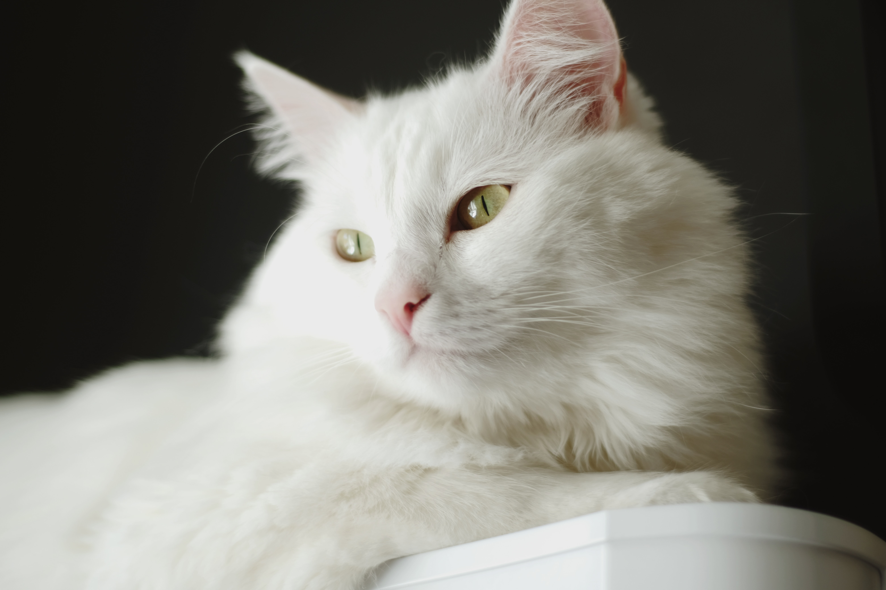

Gato Siamês
 Bastante carinhoso, o gato Siamês está entre os bichanos mais famosos do mundo. Isso porque sua beleza e postura altiva impressionam os apaixonados por felinos. Além disso, é muito fácil reconhecer o pet dessa raça, afinal, só os siameses possuem porte médio com orelhas altas e bem posicionadas na cabeça.
Bastante carinhoso, o gato Siamês está entre os bichanos mais famosos do mundo. Isso porque sua beleza e postura altiva impressionam os apaixonados por felinos. Além disso, é muito fácil reconhecer o pet dessa raça, afinal, só os siameses possuem porte médio com orelhas altas e bem posicionadas na cabeça.
Gato Angororá
O gato Angorá, em geral, é muito inteligente e conquista seu tutor com muita doçura e tranquilidade. Os felinos dessa raça têm muita energia e disposição para brincar, por isso adoram crianças. Ademais, eles são extremamente adaptáveis ao ambiente em que estão inseridos. Essa raça é uma das mais antigas do mundo.
Gato Sphynx
 Olhos grandes, orelhas pontudas e rosto afinado: esse é o Sphynx, um gato único! Os gatos da raça Sphynx podem causar certa estranheza quando os vemos pela primeira vez, mas essa aparência diferente dos demais gatos não interfere em nada, é um gatinho como qualquer outro em termos de comportamento.
Olhos grandes, orelhas pontudas e rosto afinado: esse é o Sphynx, um gato único! Os gatos da raça Sphynx podem causar certa estranheza quando os vemos pela primeira vez, mas essa aparência diferente dos demais gatos não interfere em nada, é um gatinho como qualquer outro em termos de comportamento.